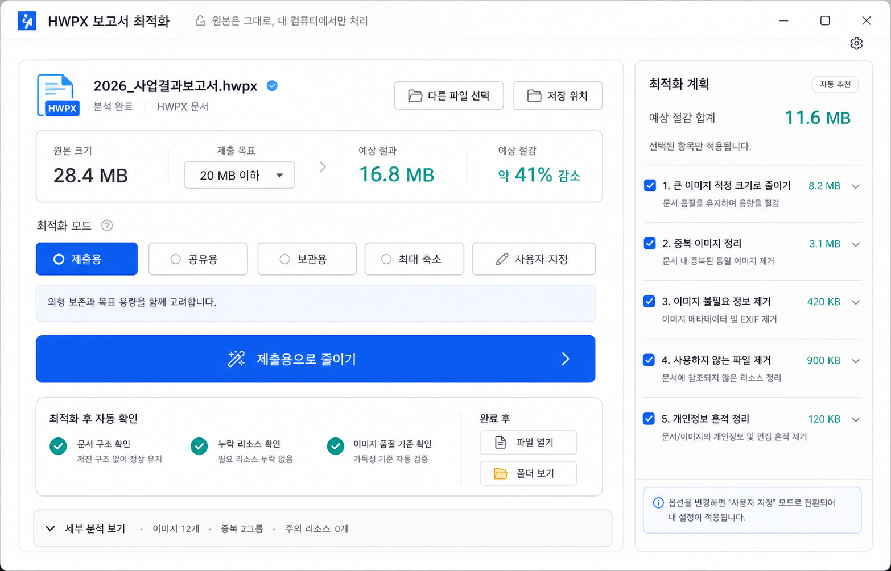

단순 압축이 아니라 목표 용량, 제출 목적, 옵션별 절감량, 개인정보 흔적 정리, 자동 검증을 포함한 최적화 흐름입니다.

목표 용량 선택, 제출용/공유용/보관용/최대 축소/사용자 지정 모드, 옵션별 예상 절감량, 개인정보 흔적 정리, 최적화 후 자동 검증, 완료 후 파일 열기 흐름을 한 화면에 배치했습니다.
핵심 행동은 여전히 “제출용으로 줄이기” 하나로 유지하고, 세부 옵션은 오른쪽 보조 패널로 분리했습니다.